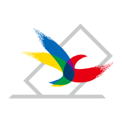

-
- 자사 제품 및 웹 UI 개발
- 2020.09 - 현재
- AhnLab
- SW개발 > UI/UX 개발
-
- 자사 운영 및 차세대 플랫폼 개발
- 2020.04 - 2020.09
- Boribori
- SW개발 > UI/UX 개발
-
- 자사 운영 및 차세대 플랫폼 개발
- 2020.04 - 2020.09
- Halfclub
- SW개발 > UI/UX 개발
-
- 협성대학교 교내 홈페이지 통합 구축
- 2020.01.20 - 현재
- 협성대학교
- SW개발 > UI/UX 개발
-
- 고려대학교 대표 중문 홈페이지 구축
- 2019.10.05 - 2020.01.10
- 고려대학교
- SW개발 > UI/UX 개발
-
- 공군 행정업무지원체계 구축사업 (대대급 홈페이지)
- 2019.09.23 - 2019.10.04
- 공군본부
- SW개발 > UI/UX 개발
-
- 육군 인터넷 홈페이지 개선 용역
- 2019.08.19 - 2019.09.20
- 국방부
- SW개발 > UI/UX 개발
-
- 성신여자대학교 학사시스템 구축(홈페이지 전면개편 포함)
- 2019.04.29 - 2019.07.26
- 성신여자대학교
- SW개발 > UI/UX 개발
-
- 조선대학교 대표 홈페이지 및 미디어홍보관 구축
- 2019.02.26 - 2019.04.26
- 조선대학교
- SW개발 > UI/UX 개발
-
- 법무부 홈페이지 G-클라우드 전환 및 고도화 사업 웹접근성 프로젝트
- 2019.01.25 - 2019.02.25
- 법무부
- SW개발 > UI/UX 개발
-
- 법무부 홈페이지 G-클라우드 전환 및 고도화 사업 유지보수
- 2018.11.20 - 2019.01.11
- 법무부
- SW개발 > UI/UX 개발
-
- 공군 응용체계통합_온나라체계
- 2018.10.15 - 2018.11.09
- 공군본부
- SW개발 > UI/UX 개발
-
- 숙명여자대학교 공과대학 및 학과 홈페이지 구축
- 2018.09.03 - 2018.09.17
- 숙명여자대학교
- SW개발 > UI/UX 개발
-
- 국방전산정보원 행정정보 통합지원체계 성능개선 사업
- 2018.07.15 - 2018.08.31
- 국방전산정보원
- SW개발 > UI/UX 개발
-
- 국군복지단 차세대 인터넷쇼핑몰 구축
- 2018.06.17 - 2018.07.14
- 국군복지단
- SW개발 > UI/UX 개발
-
- 법무부 홈페이지 G-클라우드 전환 및 고도화 사업
- 2018.05.15 - 2018.06.30
- 법무부
- SW개발 > UI/UX 개발
-
- 숙명여자대학교 특수대학원 산하 단위대학원 등 홈페이지 재구축
- 2018.05.11 - 2018.06.28
- 숙명여자대학교
- SW개발 > UI/UX 개발
-

- 정책공약알리미 개선 및 선거 기간 내 관리
- 2018.04.22 - 2018.05.15
- 중앙선거관리위원회
- SW개발 > UI/UX 개발
-
- 고려사이버대학교 입학 지원모듈 및 홈페이지 구축
- 2018.03.26 - 2018.04.21
- 고려사이버대학교
- SW개발 > UI/UX 개발
-
- KOICA 웹서비스 전략 수립 및 홈페이지 전면 개편 용역
- 2018.02.01 - 2018.03.31
- 한국국제협력단(KOICA)
- SW개발 > UI/UX 개발
-
- 강원도교육청 홈페이지 기능 개선
- 2018.01.01 - 2018.01.31
- 강원도교육청
- SW개발 > UI/UX 개발
-
- 농림축산식품부 홈페이지 클라우드 전환 및 개선
- 2017.11.10 - 2017.12.30
- 농림축산식품부
- SW개발 > UI/UX 개발
-
- 부산대학교 교수-학생 간 정보 교류 활성화를 위한 교수홈페이지 재구축
- 2017.10.01 - 2017.11.06
- 부산대학교
- SW개발 > UI/UX 개발
-
- POP시스템 고도화 및 농협하나로앱 2단계
- 2017.08.13 - 2017.09.30
- (주)농협정보시스템
- SW개발 > UI/UX 개발
| 프로젝트 | 기간 | 클라이언트 | 담당 | Link |
|---|---|---|---|---|
| 협성대학교 교내 홈페이지 통합 구축 | 2020.01.20 - 현재 | 협성대학교 | SW개발 > UI/UX 개발 | https://www.uhs.ac.kr/intro/index.html |
| 고려대학교 대표 중문 홈페이지 구축 | 2019.10.05 - 2020.01.10 | 고려대학교 | SW개발 > UI/UX 개발 | http://www.korea.ac.kr/mbshome/mbs/university/index.do |
| 공군 행정업무지원체계 구축사업 (대대급 홈페이지) | 2019.09.23 - 2019.10.04 | 공군본부 | SW개발 > UI/UX 개발 | https://go.airforce.mil.kr/ |
| 육군 인터넷 홈페이지 개선 용역 | 2019.08.19 - 2019.09.20 | 국방부 | SW개발 > UI/UX 개발 | https://www.army.mil.kr/ |
| 성신여자대학교 학사시스템 구축(홈페이지 전면개편 포함) | 2019.04.29 - 2019.07.26 | 성신여자대학교 | SW개발 > UI/UX 개발 | https://www.sungshin.ac.kr/sites/main_kor/main.jsp |
| 조선대학교 대표 홈페이지 및 미디어홍보관 구축 | 2019.02.26 - 2019.04.26 | 조선대학교 | SW개발 > UI/UX 개발 | https://www3.chosun.ac.kr/chosun/index.do |
| 법무부 홈페이지 G-클라우드 전환 및 고도화 사업 웹접근성 프로젝트 | 2019.01.25 - 2019.02.25 | 법무부 | SW개발 > UI/UX 개발 | http://www.moj.go.kr/moj/index.do |
| 법무부 홈페이지 G-클라우드 전환 및 고도화 사업 유지보수 | 2018.11.20 - 2019.01.11 | 법무부 | SW개발 > UI/UX 개발 | http://www.moj.go.kr/moj/index.do |
| 공군 응용체계통합_온나라체계 | 2018.10.15 - 2018.11.09 | 공군본부 | SW개발 > UI/UX 개발 | https://www.army.mil.kr/ |
| 숙명여자대학교 공과대학 및 학과 홈페이지 구축 | 2018.05.11 - 2018.06.28 | 숙명여자대학교 | SW개발 > UI/UX 개발 | http://www.sookmyung.ac.kr/sookmyungkr/index.do |
| 국방전산정보원 행정정보 통합지원체계 성능개선 사업 | 2018.07.15 - 2018.08.31 | 국방전산정보원 | SW개발 > UI/UX 개발 | http://ndisc.mnd.go.kr/mbshome/mbs/dcia/ |
| 국군복지단 차세대 인터넷쇼핑몰 구축 | 2018.06.17 - 2018.07.14 | 국군복지단 | SW개발 > UI/UX 개발 | https://www.welfare.mil.kr/index.jsp |
| 법무부 홈페이지 G-클라우드 전환 및 고도화 사업 | 2018.05.15 - 2018.06.30 | 법무부 | SW개발 > UI/UX 개발 | http://www.moj.go.kr/moj/index.do |
| 숙명여자대학교 특수대학원 산하 단위대학원 등 홈페이지 재구축 | 2018.05.11 - 2018.06.28 | 숙명여자대학교 | SW개발 > UI/UX 개발 | http://www.sookmyung.ac.kr/sookmyungkr/index.do |
| 정책공약알리미 개선 및 선거 기간 내 관리 | 2018.04.22 - 2018.05.15 | 중앙선거관리위원회 | SW개발 > UI/UX 개발 | |
| 고려사이버대학교 입학 지원모듈 및 홈페이지 구축 | 2018.03.26 - 2018.04.21 | 고려사이버대학교 | SW개발 > UI/UX 개발 | http://www.cuk.edu/index.do |
| KOICA 웹서비스 전략 수립 및 홈페이지 전면 개편 용역 | 2018.02.01 - 2018.03.31 | 한국국제협력단 | SW개발 > UI/UX 개발 | http://koica.go.kr/koica_kr/index.do |
| 강원도교육청 홈페이지 기능 개선 | 2018.01.01 - 2018.01.31 | 강원도교육청 | SW개발 > UI/UX 개발 | https://gwe.go.kr/mbshome/mbs/kr/index.do |
| 농림축산식품부 홈페이지 클라우드 전환 및 개선 | 2017.11.10 - 2017.12.30 | 농림축산식품부 | SW개발 > UI/UX 개발 | http://www.mafra.go.kr/sites/mafra/index.do |
| 부산대학교 교수-학생 간 정보 교류 활성화를 위한 교수홈페이지 재구축 | 2017.10.01 - 2017.11.06 | 부산대학교 | SW개발 > UI/UX 개발 | http://www.pusan.ac.kr/kor/Main.do |
| POP시스템 고도화 및 농협하나로앱 2단계 | 2017.08.13 - 2017.09.30 | (주)농협정보시스템 | SW개발 > UI/UX 개발 |